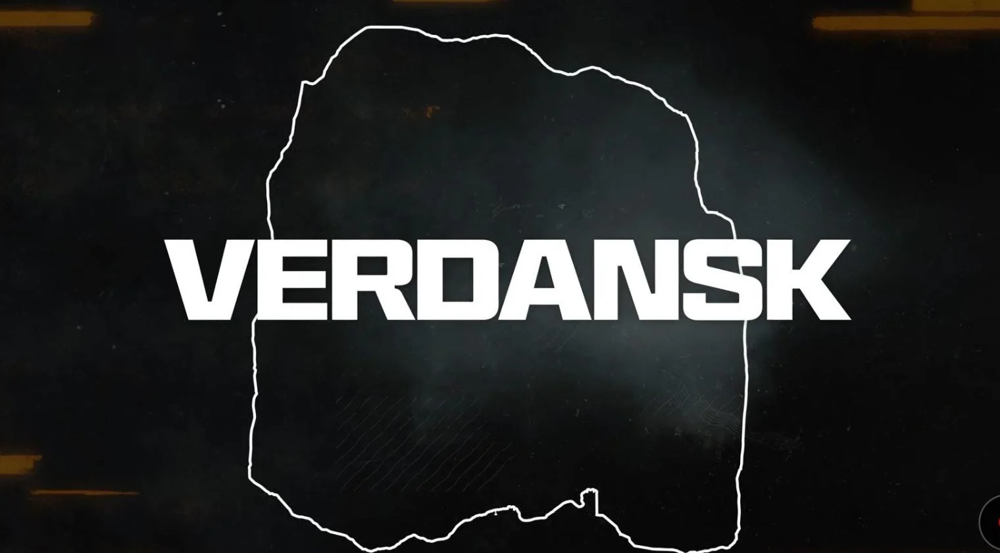

Call of Duty: Warzone confirma el regreso de Verdansk, ¿cuándo volverá el
mapa clásico del Battle Royale?
Durante un evento especial, Activision compartió excelentes noticias para
los fans nostálgicos
A pesar de que Fortnite y Apex Legends dominaban el mercado de los Battle Royale, Call of Duty: Warzone pisó
con fuerza en su debut original en 2020 y rápidamente se convirtió en uno de los principales exponentes del
género. Gran parte de su éxito se lo debe a Verdansk, el mapa original que se convirtió en uno de los
preferidos de los fans. Tras años de ausencia, por fin sabemos cuándo regresará.
Como cualquier juego como servicio contemporáneo, el free-to-play de Activision recibió multitud de
actualizaciones con el paso de los años. En esa línea, el campo de batalla evolucionó al introducir nuevas
zonas y modificar otras.
Call of Duty: Warzone llegó a un punto de no retorno en 2022, cuando quitó a Verdansk por completo de la
rotación en favor de Caldera, un nuevo mapa con temática tropical que debutó en la Temporada 1 de CoD:
Vanguard. Con el lanzamiento de CoD: Modern Warfare II y su secuela, se sustituyó por Al Mazrah y
posteriormente por Urzikstan.
Desde entonces, los fanáticos han pedido el regreso del mapa original que dio forma al Battle Royale en
aquel lejano 2020. Por suerte, Activision escuchó las plegarias de la comunidad y compartió noticias muy
positivas.
Video relacionado: Sony y Microsoft están cegados por Call of Duty
Tras el estreno de CoD: Black Ops 6, Verdansk regresará a Call of Duty: Warzone en 2025
Tal como se prometió, el 28 de agosto de 2024 se llevó a cabo el Call of Duty NEXT, un evento donde
creadores de contenido se reunieron para jugar el apartado multijugador de Call of Duty: Black Ops 6. Los
desarrolladores aprovecharon el escaparate para compartir las novedades que están en camino a la nueva
entrega y al Battle Royale de la franquicia.
En un momento de la transmisión, se confirmó que Verdansk finalmente volverá a CoD: Warzone. La fecha de
lanzamiento permanece como un misterio, pero ya sabemos que llegará en algún punto de la primavera de 2025.
Los detalles son escasos, así que se desconoce los cambios que tendrá cuando regrese el próximo año.
El regreso del mapa coincidirá con el 5.° aniversario del videojuego gratuito, pues recordemos que debutó de
manera oficial el 10 de marzo de 2020.

DESPUES DE TANTOS AÑOS, LOS JUGADORES DE COD: WARZONE PODRÁN VISITAR VERDANSK POR SEGUNDA
VEZ
“Esta primavera celebraremos 5 años increíbles de Warzone y, en nombre de todos los que trabajamos cada día
para darle vida a esa experiencia, gracias por jugar. Parece justo que, para celebrar este hito, tengamos
que volver a nuestras raíces”, comentó Stephanie Snowden, presentadora del Call of Duty NEXT y directora
sénior de comunicaciones del estudio desarrollador.
Si bien CoD: Black Ops 6 debutará el 25 de octubre y estará disponible día 1 en Xbox Game Pass, su
integración con el Battle Royale gratuito ocurrirá hasta el lanzamiento de su primera temporada, que
posiblemente tendrá lugar a principios de diciembre como ocurrió en años anteriores. En ese momento, se
presentarán nuevas características y cambios significativos.
Por ejemplo, se modificará el sistema de inventario para simplificarlo y hacerlo más parecido al del CoD:
Warzone original, por lo que se eliminarán las mochilas.
Pero cuéntanos, ¿te alegra el regreso de Verdansk? ¿Cuál es tu mapa favorito del free-to-play? Déjanos
leerte en los comentarios.